Press brake tooling — EUROSTAMP punches, dies and adapters for every clamping style, made in Italy
NovoTech sells and supports EUROSTAMP press brake tooling in Canada: punches, dies, holders, adapters and clamping made in Italy by a company that has built nothing but press brake tooling since 1970. Six pages cover the range — European-style (Amada-Promecam) punches and dies for most press brakes in Canadian shops, Trumpf and Wila-style tooling, Bystronic and LVD-style tooling, American-style tooling with the .500″ tang, and the holders, adapters and accessories that let one press brake run another style's tools. Every table gives the angle, height, tip radius or V opening and load rating of each tool in inches and millimetres, with DXF profiles to load into your CNC. Below the range: how to choose a V opening and the tonnage chart for air bending.
- Over 700 punches, dies, holders and accessories, in full lengths and sectioned sets — European, Trumpf, Wila, Bystronic, LVD and American styles
- C45 and 42CrMo4 steel, induction-hardened 55 – 60 HRC up to 3 mm (.118″) deep; special tools to your drawing
- DXF profiles to download; adapters between clamping styles; quoted and shipped from Mississauga, ON, Canada
Choosing press brake toolingWhat to check before you buy
EUROSTAMP tooling is made in Gragnano Trebbiense, Italy, by a company that has built nothing but press brake tools since 1970 — sold, shipped and supported in Canada by NovoTech.
Specifications checked against the manufacturer's current catalogue · page updated
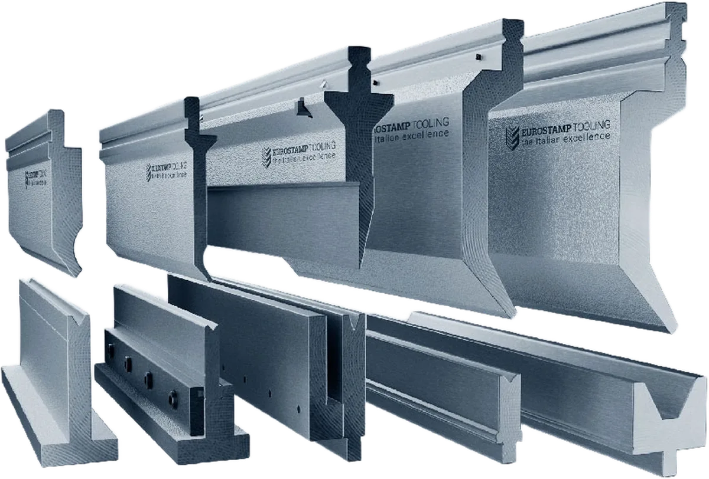
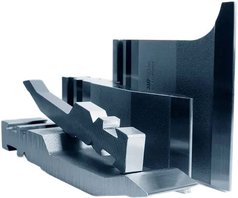
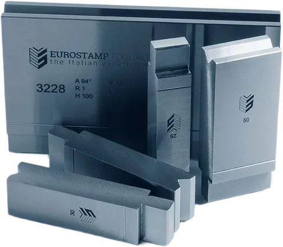
-
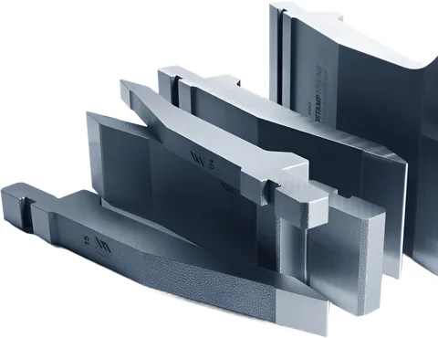
European (Amada-Promecam) punches — straight, acute, gooseneck, ESH, radius and offset
Straight, acute, gooseneck and sash punches for the Amada-Promecam clamping used on most press brakes, the ESH same-height series, radius holders R3 – R50 and offset tools.
6 tool families · tool tables and drawings
-
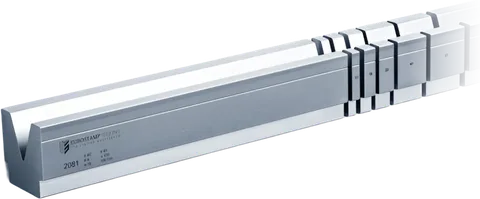
European (Amada-Promecam) dies — 1V, 2V / 4V, self-centring, T, hemming and ESH insert dies
1V dies V18 – V220, multi-V and 3U dies with holders, self-centring dies on rails, slim T dies, mechanical and pneumatic hemming dies and ESH inserts.
6 tool families · tool tables and drawings
-
Trumpf and Wila-style tooling — New Standard punches and dies
Trumpf-style punches to 300 mm high and dies V6 – V120; Wila-style punches and 55 / 100 mm dies — with safety buttons on the lighter tools.
4 tool families · tool tables and drawings
-
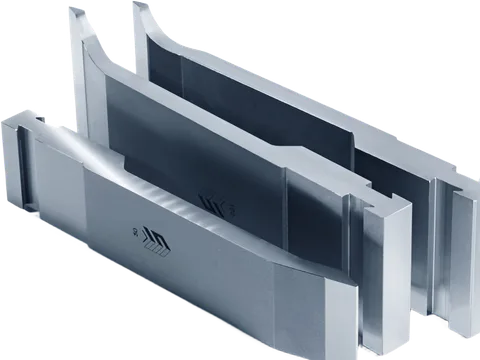
Bystronic and LVD-style tooling — punches and dies
Bystronic / Beyeler type R and RF-A punches, flattening blades and dies; LVD-style punches and dies V6 – V120 rated to 340 t/m.
4 tool families · tool tables and drawings
-
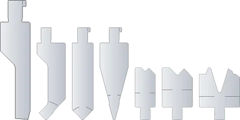
American-style punches and dies — .500″ tang
88° and 85° straight and gooseneck punches, 28° – 30° acute punches and 1V dies V .375 – .875″ with the American tang, in 36″, 18″ and sectioned lengths — and a Z1 intermediate that takes them on European-style brakes.
3 tool families · tool tables and drawings
-
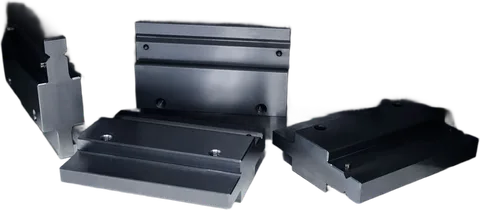
Holders, adapters, clamps and accessories
Intermediates and adapters between clamping styles, safety clamps and EUROGRIP, lower adapters, adjustable dies V24 – V400, urethane tooling and gauges.
6 tool families · tool tables and drawings
European (Amada-Promecam) punches — straight, acute, gooseneck, ESH, radius and offset line-up
-
Made in Italy · EUROSTAMP Tooling
Straight and heavy-duty punches, 45° – 88°
1011 – 1339 · 24 profiles
45° – 88°, H 2.56 – 7.87″, to 50 US t/ft
The everyday punch for air bending to 90°: a straight body with an 88° or 85° tip — 85° leaves room to over-bend stainless and high-strength steel that springs back further — in working heights from 65 to 135 mm (2.56 – 5.31″), plus 75°, 60° and 45° punches for acute bends and deeper parts. Tip radii run from 0.25 mm for crisp corners in thin sheet to 3 mm, and the four heavy-duty punches carry R6 to R10 tips and up to 150 t/m (50 US t/ft) for plate, where a sharp tip would crack the outside of the bend.
Specifications and photos -
Made in Italy · EUROSTAMP Tooling
Acute and hemming punches, 24° – 35°
1033 – 1311 · 20 profiles
26° – 35° acute, 24° – 28° hemming, H 3.15 – 7.87″
Acute punches bend well past 90° — to 30° or 35° in a matching die — for the first stage of a hem, for acute flanges and to over-bend high-strength steel. The 26°, 30° and 35° punches come in working heights from 80 to 200 mm (3.15 – 7.87″) with tip radii from 0.5 to 5 mm; the slim-body 30° punch reaches into narrow profiles. The 24° and 28° hemming punches pre-bend the flange that a hemming die then closes flat in the second stroke.
Specifications and photos -
Made in Italy · EUROSTAMP Tooling
Gooseneck and sash punches, 60° – 88°
1014 – 1322 · 32 profiles
H 2.62 – 7.87″ — single, double, reversed and sash
A gooseneck punch is relieved behind the tip so a returned flange clears the body: the punch for U-channels, pans and boxes with return flanges. Thirty-odd profiles from 66.6 to 200 mm (2.62 – 7.87″) high — single, double and reversed goosenecks, 60° and 85° goosenecks for acute returns and springy materials, and sash punches with the slim nose for tight return flanges and window profiles. The tall 145, 165 and 200 mm punches reach into deep boxes; check the load rating, which falls as the neck gets deeper.
Specifications and photos -
Made in Italy · EUROSTAMP Tooling
ESH same-height punches, 120 mm
1340 – 1349 · 10 profiles
All 120 mm (4.72″) high, 26° – 86°
ESH — EUROSTAMP Same Height — is a European-style series in which every punch has the same 120 mm (4.72″) working height, so straight, gooseneck and sash punches can stand side by side in stations and a complex part is bent in one setup without moving the ram. The punches are premium chrome-molybdenum steel with 950 – 1,050 N/mm² tensile strength, so slim sections still carry high tonnage, and the tips are induction-hardened to 55 – 58 HRC more than 3 mm deep. Angles 86°, 60°, 30° and 26°; the matching ESH insert dies are on the European dies page.
Specifications and photos -
Made in Italy · EUROSTAMP Tooling
Radius punches: holders and round elements R3 – R50
holders 1036 – 1306 · round elements R3 – R50
Round elements R3 – R50 (.12 – 1.97″) in 12 holders
For a large inside radius — cabinet and enclosure corners, tank shells, architectural trim, rolled-look profiles — a radius holder clamps in the European-style beam and takes a round element of the radius you need: small elements from R3 to R6.5 in an H60 holder, round elements from R7 to R50 in straight (H67 and H100) or gooseneck (H87 and H115) holders, and a flat element for flattening. Changing the radius means changing a bar, not buying a punch. Holders for Bystronic, Trumpf, Weinbrenner and EHT press brakes take the same elements.
Specifications and photos -
Made in Italy · EUROSTAMP Tooling
Offset (joggle) tools, Z 1 – 15 mm
insert pairs 1130 – 1280 · holders 1150, 1198, 1242
Z 1 – 15 mm (.04 – .59″), 90° – 160°
An offset tool bends a Z — two opposite bends a short distance apart — in one stroke: for lap joints that sit flush, stepped flanges, frames and enclosure doors. A pair of inserts works in a pair of holders, upper and lower; the inserts set the offset height Z, from 1 to 15 mm (.04 – .59″), at 90° for most sizes and 140° to 160° for the shallow offsets in thin sheet. Holders in European style, Bystronic R / RF-A and Trumpf / Wila style take the same inserts.
Specifications and photos
European (Amada-Promecam) dies — 1V, 2V / 4V, self-centring, T, hemming and ESH insert dies line-up
-
Made in Italy · EUROSTAMP Tooling
1V dies, V 18 – 220 mm
2020 – 7290 · 19 profiles
V .71 – 8.66″ (18 – 220 mm), to 67 US t/ft
The solid one-V die: a 60 mm (2.36″) wide block, the standard European-style die for air bending sheet and plate. 85° dies with V openings from 32 to 80 mm (1.26 – 3.15″) cover 90° bends from about 5/32 to 3/8″ plate by the 8 × thickness rule; 80° dies with V100 to V160 take heavier plate, and the V220 die stands 190 mm (7.48″) tall for 1″ plate and up to 200 t/m (67 US t/ft). The 60°, 45° and 30° dies are for acute bends and the first stage of a hem.
Specifications and photos -
Made in Italy · EUROSTAMP Tooling
2V, 4V and U dies with holders
2013 – 2093 · 23 profiles
2V, 4V and 3U, V .24 – 1.97″ (6 – 50 mm)
Several openings in one die, for shops that change jobs often: turn the die and the next V is ready. The bolted 2V dies are 26 mm (1.02″) low and sit in a holder 34, 39, 55 or 75 mm high; the self-centring 2V dies are 46 mm (1.81″) high and reversible, centring themselves on their rail. The 4V dies are 60 mm (2.36″) square blocks with a V on each face — 16, 22, 35 and 50 mm at 85° – 88°, or 10 to 35 mm at 60° — and the 3U die has U channels of 6, 10 and 18 mm for flanges and channels.
Specifications and photos -
Made in Italy · EUROSTAMP Tooling
Self-centring 1V dies, V 4 – 25 mm
3158 – 3199 · 22 profiles
V .16 – .98″ (4 – 25 mm), 14 mm (.55″) wide
Slim one-V dies, 14 mm (.55″) wide and 60 mm (2.36″) high, that centre themselves on a rail: narrow enough for short flanges and return bends close to the die, and quick to change because the rail lines them up under the punch. 88° dies from V4 to V25 for thin sheet, 60° and 30° dies for acute bends and pre-hemming. The rails come for the lower beam (2059) or for a holder (2058).
Specifications and photos -
Made in Italy · EUROSTAMP Tooling
T dies, V 6 – 25 mm, 80 and 120 mm high
3015 – 3099 · 70 profiles
H 3.15 / 4.72″, V .24 – .98″ (6 – 25 mm)
A slim die body on a 60 mm (2.36″) T-shaped foot: the foot clamps in the European-style lower beam like a block die, and the narrow body leaves room for return flanges, hems and closed profiles that would hit a solid die. Seventy profiles in two heights — 80 and 120 mm (3.15 / 4.72″) — at 88°, 85°, 60°, 45° and 30°, with V openings from 6 to 25 mm (.24 – .98″).
Specifications and photos -
Made in Italy · EUROSTAMP Tooling
Hemming dies, mechanical and pneumatic
3037/6 – 3178 · 13 profiles
V .24 – .47″, mechanical and pneumatic
A hemming (flattening) die pre-bends and closes a hem on one press brake with one punch: an acute V on top pre-bends the flange to about 30°, and the spring-loaded upper plate then flattens it in the second stroke. The 35°, 30° and 26° dies are 100 to 135 mm (3.96 – 5.31″) high with V6 to V12 for sheet to about 1/8″; the 24° and 28° dies are lower, 80 mm (3.15″). The pneumatic versions (PN) open and close with shop air — kit 4313 connects them.
Specifications and photos -
Made in Italy · EUROSTAMP Tooling
ESH insert dies and holder
3320 – 3333 · 14 profiles
V .24 – .98″, nitrided to 65 HRC
The lower half of the ESH series: one-V inserts 14 mm (.55″) wide and 60 mm (2.36″) high in the 3173 holder, which clamps in the European-style lower beam and holds them on a urethane strip. The inserts are nitrided all over to 65 HRC — the walls of the V, not just the shoulders, so they resist scoring and pick-up — and phosphate-coated; wide shoulder radii mark the sheet less, and chamfered corners avoid collisions with flanges already bent. 86° inserts V6 to V25, 30° inserts V6 to V25.
Specifications and photos
Trumpf and Wila-style tooling — New Standard punches and dies line-up
-
Made in Italy · EUROSTAMP Tooling
Trumpf-style punches, 26° – 86°
1233 – 1320 · 20 profiles
H 5.51 – 11.81″, to 84 US t/ft
Punches with the Trumpf tang, for Trumpf press brakes and the Darley, Safan and other brakes with Wila-style (New Standard) clamping. Tall bodies — 140 to 300 mm (5.51 – 11.81″) — for deep boxes: straight and acute 26° and 28° punches, 86° goosenecks to the 300 mm deep-box punch, sash punches, 28° hemming punches and two 60° heavy-duty punches with R4 tips rated to 250 t/m (84 US t/ft). Safety buttons that stop a released tool from falling are fitted as standard on every tool up to 13.5 kg (30 lb).
Specifications and photos -
Made in Italy · EUROSTAMP Tooling
Trumpf-style dies, V 6 – 120 mm
3123 – 3244 · 79 profiles
V .24 – 4.72″ (6 – 120 mm), to 54 US t/ft
One-V dies with the Trumpf tang in two heights, 100 and 150 mm (3.94 / 5.91″) — and 120 mm for the big V openings: 86° and 84° dies from V6 to V50 for sheet, 80° dies from V24 to V100 and a 60° V120 die for plate, and 30° dies for acute bends and the first stage of a hem. The 32xx series is 42CrMo4 steel; the hemming dies 3157, 3174 and 3175 (U 8.1 to 12.1 mm) close the hem after the acute pre-bend.
Specifications and photos -
Made in Italy · EUROSTAMP Tooling
Wila-style punches, 28° – 86°
1323 – 1337 · 15 profiles
H 5.31 – 9.33″, to 54 US t/ft
Punches in Wila style (New Standard) for Wila clamping on Trumpf, Darley, RPC, Safan and other press brakes: straight 80° punches 157 to 237 mm (6.18 – 9.33″) high, 28° acute punches from 135 mm, 86° goosenecks to 237 mm and 60° heavy-duty punches with R3 tips rated to 160 t/m (54 US t/ft). Safety buttons are fitted as standard on tools up to 12.5 kg (27.5 lb).
Specifications and photos -
Made in Italy · EUROSTAMP Tooling
Wila-style dies, V 6 – 24 mm
3250 – 3286 · 26 profiles
V .24 – .94″, H 2.17 / 3.94″
One-V dies in Wila style in two heights: the low 55 mm (2.17″) dies for maximum stroke and daylight, and 100 mm (3.94″) dies rated to 120 t/m (40 US t/ft). 86° dies from V6 to V24, 80° for heavier sheet and 30° dies for acute bends and pre-hemming. 42CrMo4 steel, tempered and induction-hardened.
Specifications and photos
Bystronic and LVD-style tooling — punches and dies line-up
-
Made in Italy · EUROSTAMP Tooling
Bystronic-style punches, type R and RF-A
1216 – 1321 · 20 profiles
Type R and RF-A, H 6.10 – 9.84″
Punches for Bystronic and Beyeler press brakes with type R, RF and RF-A clamping: straight and acute 28° and 30° punches 155 to 250 mm (6.10 – 9.84″) high, 85° – 88° goosenecks, sash punches, and 24° flattening blades 8, 10 and 12 mm thick for hemming. The type R and RF-A tangs differ — tell us the clamping of your brake, or send a photo of a tool you already use.
Specifications and photos -
Made in Italy · EUROSTAMP Tooling
Bystronic-style dies, V 6 – 60 mm
3106 – 3242 · 23 profiles
V .24 – 2.36″ (6 – 60 mm), H 2.17 – 2.56″
One-V dies for Bystronic and Beyeler lower beams, 55 to 65 mm (2.17 – 2.56″) high: 88° dies V6 to V24, 85° V32 and V40, 60° V40 to V60 and 30° dies V6 to V32 — plus the hemming dies with U 8.1, 10.1 and 12.1 mm that close the hem after the flattening blade's pre-bend.
Specifications and photos -
Made in Italy · EUROSTAMP Tooling
LVD-style punches, 20° – 78°
1408 – 1415 · 8 profiles
H 7.72 – 8.11″, 20° – 78°
Punches for LVD press brakes, 196 mm (7.72″) high: 78° straight punches with R1 and R2 tips rated to 75 t/m (25 US t/ft) for 90° air bending, 26° acute punches to 80 t/m and a 20° hemming punch 206 mm (8.11″) high. 42CrMo4 steel, 510 mm (20.1″) long.
Specifications and photos -
Made in Italy · EUROSTAMP Tooling
LVD-style dies, V 6 – 120 mm
3401 – 3449 · 49 profiles
V .24 – 4.72″, to 114 US t/ft
One-V dies for LVD lower beams in two heights, 90 and 130 mm (3.54 / 5.12″): 78° dies from V6 to V120 for 90° air bending of sheet and plate — rated up to 340 t/m (114 US t/ft) on the V100 die — 30° dies from V6 to V60 for acute bends, and a 20° hemming die. 42CrMo4 steel, 510 mm (20.1″) long.
Specifications and photos
American-style punches and dies — .500″ tang line-up
-
Made in Italy · EUROSTAMP Tooling
American-style punches, 28° – 88°
S28880 – S29252 · 7 profiles
Tang .500″, H 3.779 – 5.125″
Punches with the .500″ (12.7 mm) American tang and safety lip, for the American-style clamping used on most North American press brakes: 88° straight punches and 88° and 85° goosenecks for 90° air bending, 30° and 28° acute punches for hemming and acute angles, and a 28° acute gooseneck 5.125″ (130.18 mm) tall. Working height 3.779″ (96 mm); 36″ full lengths, 18″ half lengths and 35.75″ sectioned sets, each with its own part number.
Specifications and photos -
Made in Italy · EUROSTAMP Tooling
American-style dies, V .375 – .875″
S28946 – S29269 · 8 profiles
V .375 – .875″, H 1.937″
One-V dies with the .500″ American tang, all with the same 1.937″ (49.2 mm) working height so punches and dies stay in step when you change V: 88° dies with V .375, .500, .626 and .750″ for 90° air bending of 16 gauge to 3/32″, and 30° and 34° acute dies from V .375 to .875″ for hemming and acute bends. Body widths 1.000, 1.500 and 2.000″.
Specifications and photos -
Made in Italy · EUROSTAMP Tooling
American-style Z1 intermediate
Z1 · part number on request
Z1 beam → .500″ American punches
An upper intermediate that puts American-style punches on press brakes built for Z1 intermediates (Amada-Promecam European style). The body is a standard Z1 — 3.937″ (100 mm) high under a 1.181″ (30 mm) upper tang, 1.063″ (27 mm) deep, with the bending axis .276″ (7 mm) from the tang face — so it lines up with the machine's other Z1 intermediates; the lower slot takes the .500″ (12.7 mm) American tang, with a .650″ (16.5 mm) pocket for its safety lip.
Specifications and photos
Holders, adapters, clamps and accessories line-up
-
Made in Italy · EUROSTAMP Tooling
Intermediates and upper adapters
intermediates 4073 – 4411 · adapters 4000 – 4362
Z1 / Z2 intermediates, adapters between 12 clamping systems
The intermediate is the holder between the ram and a European-style punch: it carries the clamp and, on the adjustable versions, a wedge that crowns each section so the angle stays true along the bend. Z1 intermediates have a 27 mm (1.06″) body with the bending axis 7 mm from the face; Z2 intermediates a 40 mm (1.57″) body with the axis at 20 mm; the heavy-duty versions are solid CrMo steel. The upper adapters go the other way: they let a press brake with Trumpf / Wila, Beyeler, LVD, Weinbrenner, CBC, EHT, Durmazlar, Darley, Baykal or Colgar clamping run European-style punches — or a European-style beam run Trumpf / Wila punches. The Z1 intermediate for American-style punches is on the American-style tooling page.
Specifications and photos -
Made in Italy · EUROSTAMP Tooling
Clamps and the EUROGRIP clamping system
clamps 4007 – 5013 · EUROGRIP 4381 – 4415
Safety clamps, EUROGRIP manual and pneumatic
Manual clamps for European-style intermediates — simple, with a top handle or a fold-away handle, with the safety tooth that catches a punch as it is released, and with a urethane insert that holds the tool without marking it — and EUROGRIP, EUROSTAMP's own clamping system. Each EUROGRIP clamp is worked by a recessed handle on top, so nothing stands proud to hit the part; the M-EASY clamps retrofit existing Z1 and Z2 intermediates, the M-TOP clamps come assembled on new intermediates, and the P-EASY and P-TOP versions clamp a whole beam of punches pneumatically from one control unit.
Specifications and photos -
Made in Italy · EUROSTAMP Tooling
Lower adapters, die holders and tangs
4014 – 4305 · 9010 – 9020 · tangs 8010 – 8107
Between styles, die holders to 13.5 ft, tangs on request
Lower adapters fit dies of one style on a lower beam of another: European dies on a Beyeler / Trumpf beam, Beyeler / Trumpf or LVD dies on a European beam, LVD dies on a Trumpf beam. The solid lower die holders, 2,100 to 4,100 mm (6.9 – 13.5 ft) long, give a European-style die seat on a press brake that has none; the filler blocks raise a die by 55 mm (2.17″) to match the punch height. And any EUROSTAMP tool can be made with the tang of your machine — Beyeler / Trumpf, LVD, Weinbrenner, American, Barretta, BMB or Gasparini — on request.
Specifications and photos -
Made in Italy · EUROSTAMP Tooling
Adjustable dies, V 24 – 400 mm
3190 · 3191 · 3192 · 3243
V .94 – 15.75″ (24 – 400 mm), to 202 US t/ft
For plate and for shops that bend many thicknesses: one adjustable die replaces a rack of 1V dies. Spacer bars set the V opening between the two halves, and case-hardened rollers on the shoulders let the plate slide in instead of dragging, so it is not marked and less force is needed. Four sizes from V24 to V400 mm (.94 – 15.75″), rated from 125 to 600 t/m (42 – 202 US t/ft) at 90°; each comes with its spacer set and 5 m of protective film and needs its own lower adapter.
Specifications and photos -
Made in Italy · EUROSTAMP Tooling
Urethane and nylon dies, protective film
2036 – 2119 · 4308 – 4380
Urethane and nylon inserts, film and cloth
For stainless, aluminum, painted and pre-finished sheet that must not be marked: a urethane insert in its holder works as a die that the punch presses the sheet into — no V, no shoulders, no marks — and nylon inserts replace the steel shoulders of a V. Where the steel die stays, a urethane film or a protective cloth over the V keeps the shoulders off the part.
Specifications and photos -
Made in Italy · EUROSTAMP Tooling
Gauges, squares, safety buttons and tool storage
gauges, squares, buttons, cabinets
Digital gauge, squares, safety buttons, cabinets
The small things around the tooling: a digital gauge that reads 45° chamfers and radii on a bent part, a protractor for inside and outside angles, fixed and adjustable reference squares and magnetic squaring arms for setting up, front support arms with trip stops, spare safety buttons for Trumpf- and Wila-style tools, shear blades — and cabinets and a trolley that keep a set of punches and dies in order next to the press brake.
Specifications and photos
The range at a glance
Every tooling family on one table: the number of profiles, the angles, the working heights and the highest load rating. Each row links to the family's tool table, with the full data and the DXF profiles.
| Tool family | Page | Profiles | Angles | Height H | Max. load |
|---|---|---|---|---|---|
| Straight punches | European punches | 24 | 45° – 88° | 2.559″ – 7.874″ (65 – 200 mm) | to 50 US t/ft (150 t/m) |
| Acute punches | European punches | 20 | 24° – 35° | 3.150″ – 7.874″ (80 – 200 mm) | to 34 US t/ft (100 t/m) |
| Gooseneck punches | European punches | 32 | 60° – 88° | 2.622″ – 7.874″ (66.6 – 200 mm) | to 34 US t/ft (100 t/m) |
| ESH punches | European punches | 10 | 26° – 86° | 4.724″ (120 mm) | to 34 US t/ft (100 t/m) |
| Radius punches | European punches | 45 · holders + elements | radius R3 – R50 | holders H 2.36 – 9.84″ (60 – 250 mm) | — |
| Offset tools | European punches | 29 · inserts + holders | 90° – 160° | Z .04 – .59″ (1 – 15 mm) | — |
| 1V dies | European dies | 19 | 30° – 85° | 2.362″ – 7.480″ (60 – 190 mm) | to 67 US t/ft (200 t/m) |
| Multi-V dies | European dies | 23 | 30° – 88° | 1.024″ – 2.362″ (26 – 60 mm) | to 34 US t/ft (100 t/m) |
| Self-centring dies | European dies | 22 | 30° – 88° | 2.362″ – 2.559″ (60 – 65 mm) | to 34 US t/ft (100 t/m) |
| T dies | European dies | 70 | 30° – 88° | 3.150″ – 4.724″ (80 – 120 mm) | to 34 US t/ft (100 t/m) |
| Hemming dies | European dies | 13 | 24° – 35° | 3.150″ – 5.315″ (80 – 135 mm) | to 34 US t/ft (100 t/m) |
| ESH insert dies | European dies | 14 | 30° – 86° | 2.362″ (60 mm) | to 34 US t/ft (100 t/m) |
| Trumpf punches | Trumpf & Wila | 20 | 26° – 86° | 5.512″ – 11.811″ (140 – 300 mm) | to 84 US t/ft (250 t/m) |
| Trumpf dies | Trumpf & Wila | 79 | 24° – 86° | 3.937″ – 5.906″ (100 – 150 mm) | to 54 US t/ft (160 t/m) |
| Wila punches | Trumpf & Wila | 15 | 28° – 86° | 5.315″ – 9.331″ (135 – 237 mm) | to 54 US t/ft (160 t/m) |
| Wila dies | Trumpf & Wila | 26 | 30° – 86° | 2.165″ – 3.937″ (55 – 100 mm) | to 40 US t/ft (120 t/m) |
| Bystronic punches | Bystronic & LVD | 20 | 24° – 88° | 6.102″ – 9.843″ (155 – 250 mm) | to 47 US t/ft (140 t/m) |
| Bystronic dies | Bystronic & LVD | 23 | 24° – 88° | 2.165″ – 3.937″ (55 – 100 mm) | to 34 US t/ft (100 t/m) |
| LVD punches | Bystronic & LVD | 8 | 20° – 78° | 7.717″ – 8.110″ (196 – 206 mm) | to 27 US t/ft (80 t/m) |
| LVD dies | Bystronic & LVD | 49 | 20° – 78° | 3.543″ – 5.118″ (90 – 130 mm) | to 114 US t/ft (340 t/m) |
| American punches | American style | 7 | 28° – 88° | 3.779 – 5.125″ (96 – 130.2 mm) | — |
| American dies | American style | 8 | 30° – 88° | 1.937″ (49.2 mm) | — |
| Z1 intermediate | American style | 1 · intermediate | — | 3.937″ (100 mm) + 1.181″ tang | — |
| Upper adapters | Holders & adapters | 31 · intermediates + adapters | — | H 2.32 – 5.91″ (59 – 150 mm) | to 54 US t/ft (160 t/m) |
| Clamps & EUROGRIP | Holders & adapters | 35 · clamps + EUROGRIP | — | H 1.69 – 2.36″ (43 – 60 mm) | — |
| Lower adapters | Holders & adapters | 26 · adapters + tangs | — | H 1.18 – 2.36″ (30 – 60 mm) | — |
| Adjustable dies | Holders & adapters | 4 · adjustable dies | 30° – 60° min. | V .94 – 15.75″ (24 – 400 mm) | to 202 US t/ft (600 t/m) |
| Urethane & film | Holders & adapters | 26 · inserts, holders, film | — | — | — |
| Gauges & storage | Holders & adapters | 24 · accessories | — | — | — |
Loads are the maker's maximum in tonnes per metre of tool length, shown as US tons per foot (1 t/m = 0.336 US t/ft). Heights are the working height H.
Every EUROSTAMP tool from NovoTech
- Made in Italy since 1970EUROSTAMP builds only press brake tooling — punches, dies, adapters and clamping — in Gragnano Trebbiense, near Piacenza.
- Hardened where it wearsC45 and 42CrMo4 steel, induction-hardened to 55 – 60 HRC up to 3 mm (.118″) deep on the working surfaces.
- DXF profiles to downloadMost punches and dies here link to their DXF profile — load it into the tool library of your Delem, ESA or Cybelec control, or into offline software.
- Fits your press brakeEuropean (Amada-Promecam), Trumpf, Wila, Bystronic, LVD and American styles, and adapters between them.
- Special tools to your drawingEUROSTAMP's technical department designs special punches and dies for the parts standard tooling cannot bend.
- Shipped across CanadaQuoted, ordered and shipped by NovoTech from Mississauga, ON, Canada, with the freight arranged at competitive rates.
Inside the factory — where the tooling is made
EUROSTAMP introduces its plant in Gragnano Trebbiense, Italy, where the punches, dies and adapters on these pages are made. More videos are on NovoTech's YouTube playlist.
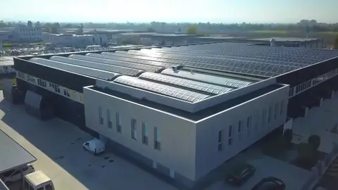
EUROSTAMP press brake tooling — introduction
Choosing press brake tooling
The clamping styles, the V opening and the tonnage a bend needs — and how to load the tools into your CNC.
Which tooling style fits my press brake?
Press brake tooling is made to the clamping of the press brake, not to its brand. Five systems cover almost every machine in Canadian shops:
- European (Amada-Promecam) — the most common: Amada, Promecam, Accurpress, Baykal, Dener, Durmazlar, Ermaksan, Prima Power, Salvagnini, Yawei and many more. Punches hang in intermediates with clamps; dies sit in a 60 mm lower seat. See European punches and European dies.
- Trumpf and Wila (New Standard) — hydraulic clamping that pulls a vertical tang up and seats it; Trumpf, Darley, Safan, RPC. See Trumpf and Wila-style tooling.
- Bystronic / Beyeler type R, RF and RF-A, and LVD, each with its own tang. See Bystronic and LVD-style tooling.
- American style — a .500″ tang in a clamp bar, on most older North American brakes. See American-style tooling.
Adapters let one system run another's tools — European punches on a Trumpf, Beyeler or LVD ram, Trumpf / Wila punches on a European ram — at the cost of some height and load capacity. They are on the holders and adapters page.
Choosing the V opening — the 8 × thickness rule
In air bending the punch pushes the sheet into the V without bottoming, and the V opening decides almost everything: the force, the inside radius and the shortest flange you can bend.
- V opening: about 8 × the thickness for mild steel up to 1/2″; 10 – 12 × for heavier plate; 6 × for soft aluminum; 8 – 10 × for stainless.
- Inside radius: about 1/6 of the V (0.16 × V) in mild steel — a 1″ V gives roughly a 5/32″ radius. Choose a punch tip at or below this radius.
- Minimum flange: about 0.7 × V, measured to the outside of the bend — shorter flanges fall into the V.
- Force: halving the V doubles the force; doubling the thickness quadruples it.
Tonnage chart for air bending
The force for a 90° air bend is F = S² × 2 × R ÷ (1.4 × V) tonnes per metre of bend — thickness S and V opening in millimetres, tensile strength R = 47 kg/mm² for mild steel (the EUROSTAMP formula; 70 for stainless, 25 for aluminum) — which in inches and US tons per foot is 575 × t² ÷ V; 1 US ton per foot is 2.98 t/m. Multiply by the bend length for the press brake, and compare the tons per foot with the load rating of the punch and the die. Stainless needs about 1.5 times the force, soft aluminum about half, hard aluminum alloys about the same as mild steel; bottoming and coining need three to five times more.
| Thickness \ V | 1/4″6 mm | 3/8″10 mm | 1/2″13 mm | 5/8″16 mm | 3/4″19 mm | 1″25 mm | 1-1/4″32 mm | 1-1/2″38 mm | 2″51 mm | 2-1/2″64 mm | 3″76 mm | 4″102 mm | 5″127 mm | 6″152 mm | 8″203 mm |
|---|---|---|---|---|---|---|---|---|---|---|---|---|---|---|---|
| 20 ga.036″ · 0.9 mm | 3.0 | 2.0 | |||||||||||||
| 18 ga.048″ · 1.2 mm | 3.5 | 2.6 | |||||||||||||
| 16 ga.060″ · 1.5 mm | 5.5 | 4.1 | 3.3 | 2.8 | |||||||||||
| 14 ga.075″ · 1.9 mm | 6.5 | 5.2 | 4.3 | ||||||||||||
| 12 ga.105″ · 2.7 mm | 10.1 | 8.5 | 6.3 | 5.1 | |||||||||||
| 11 ga.120″ · 3.0 mm | 11.0 | 8.3 | 6.6 | 5.5 | |||||||||||
| 10 ga.135″ · 3.4 mm | 14.0 | 10.5 | 8.4 | 7.0 | |||||||||||
| 3/16″.188″ · 4.8 mm | 16.2 | 13.5 | 10.1 | ||||||||||||
| 1/4″.250″ · 6.3 mm | 24.0 | 18.0 | 14.4 | 12.0 | |||||||||||
| 5/16″.312″ · 7.9 mm | 28.1 | 22.5 | 18.7 | ||||||||||||
| 3/8″.375″ · 9.5 mm | 32.3 | 27.0 | 20.2 | ||||||||||||
| 1/2″.500″ · 12.7 mm | 47.9 | 35.9 | 28.8 | 24.0 | |||||||||||
| 5/8″.625″ · 15.9 mm | 56.2 | 44.9 | 37.4 | ||||||||||||
| 3/4″.750″ · 19.0 mm | 64.7 | 53.9 | 40.4 | ||||||||||||
| 1″1.000″ · 25.4 mm | 95.8 | 71.9 |
Example: 3/16″ mild steel in a 1-1/2″ V needs 13.5 tons per foot; a 6 ft bend needs about 81 tons (73 t), and a punch and die rated above 13.5 US t/ft (40 t/m).
Punch shapes: straight, gooseneck, acute, sash
A straight punch is the stiffest and carries the most load — the first choice for open angles and plate. A gooseneck is relieved behind the tip so a returned flange clears it: U-channels, pans, boxes. Acute punches (26° – 35°) bend past 90° for hems and springback; sash punches have a slim nose for tight returns. Large-radius bends use a radius holder with a round element, and Z-bends an offset tool.
Sectioned (segmented) tooling and horns
Sectioned — or segmented — sets are cut into pieces — 10 to 270 mm on European-style punches — that add up to a standard length, so you assemble exactly the length of the bend and leave gaps for flanges already formed. Horns are end pieces relieved on the outside: put one at each end of the punch to bend the fourth side of a box. Full lengths (835 mm on European style, 500 – 515 mm on Trumpf, Wila and Bystronic) are stiffer and quicker to set for long, straight bends.
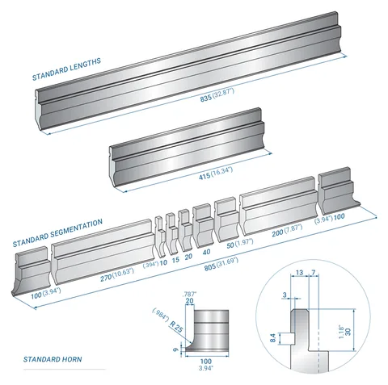
Steel, hardness and load ratings
EUROSTAMP makes its tools from C45 medium-carbon steel and Italian 42CrMo4 chrome-molybdenum steel, and induction-hardens the working surfaces to 55 – 60 HRC up to 3 mm (.118″) deep: the tip and the shoulders resist wear while the core stays tough enough not to crack. Every tool has a load rating per metre of length — never exceed it, and remember that a short part concentrates the whole press force on a short piece of tool.
On request EUROSTAMP adds a surface treatment: nitriding hardens the surface further against wear, fatigue and notches; phosphating protects against corrosion; or both together.
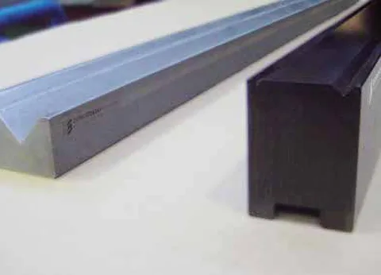
Loading the tools into your CNC
Every tool with a DXF link in the tables can be downloaded as its profile, drawn in millimetres, and imported into the tool library of the press brake control (Delem, ESA, Cybelec) or into offline bending software, so the control can check collisions and calculate the bend. On an ESA 630 the profile can also be drawn on the control — NovoTech's tutorial video shows how.
Questions we get asked about press brake tooling
Which tooling fits my press brake?
It depends on the clamping, not the brand of the machine. Most press brakes in Canadian shops — Amada, Accurpress, Baykal, Dener, Durmazlar, Ermaksan, Yawei and many more — clamp European-style (Amada-Promecam) tools. Trumpf, Darley and Safan use Trumpf or Wila (New Standard) clamping; Bystronic and Beyeler use type R, RF or RF-A; LVD has its own; and many older North American brakes take American-style tools with a .500″ tang. Send us the model of your brake or a photo of the clamp and a tool, and we confirm before you order.
How do I choose the V opening?
Start with V = 8 × the sheet thickness for mild steel up to about 1/2″ — V24 (about 1″) for 1/8″, V50 (2″) for 1/4″ — and 10 to 12 × for heavier plate. Aluminum works with 6 ×, stainless with 8 – 10 ×. The inside radius comes out at about 1/6 of the V and the shortest flange you can bend at about 0.7 × V. The guide and the tonnage chart below work through it.
How much tonnage does a bend need?
For 90° air bending of mild steel, tons per foot ≈ 575 × t² ÷ V, with the thickness t and the V opening in inches: 1/4″ in a 2″ V needs about 18 US tons per foot of bend, so a 10 ft bend needs about 180 tons (163 t). Stainless needs about 1.5 times as much, soft aluminum about half. The tooling must be rated above the tonnage per foot, and the press brake above the total.
What do the load ratings in the tables mean?
The maximum force the tool takes per unit of length — EUROSTAMP gives it in tonnes per metre, we add US tons per foot. If a bend needs 15 tons per foot, use a punch and a die rated above 15 US t/ft (45 t/m). Concentrated loads on a short piece of tool are the usual way tools crack: a 1 ft part bent with 30 tons puts 30 tons per foot on the tool.
Do you make special tools?
Yes. EUROSTAMP's technical department designs special punches and dies — profiles, radii, offsets, combined tools — for parts standard tooling cannot bend. Send us the part drawing and the press brake model, and we come back with a proposal and a price.
What steel is the tooling made of?
C45 medium-carbon steel, raw or tempered, and Italian 42CrMo4 chrome-molybdenum steel for the heavier and slimmer tools. The working surfaces are induction-hardened to 55 – 60 HRC up to 3 mm (.118″) deep, so the tip and shoulders resist wear while the body stays tough. The ESH insert dies are nitrided all over to 65 HRC.
Can we get the tools as DXF files for our CNC?
Yes — every tool in these tables that has a DXF link can be downloaded straight from the page: the profile drawn in millimetres, ready to import into the tool library of a Delem, ESA or Cybelec control or into offline bending software. For the few tools without one, ask us and we get the drawing from EUROSTAMP.
Request a quote
Tell us your press brake (make, model and clamping), the tool codes or the part you need to bend, and the lengths, and we will come back with pricing and delivery. We answer within one business day.
Prefer to talk? Call +1 647 526 5510 (Mon–Fri 9:00–17:00 Eastern) or email infoNovoTechMachineTools.com.
1365 Mid-Way Blvd, Unit 26, Mississauga, ON L5T 2J5, Canada
Represent NovoTech in your city or province
Sales agents wanted across Canada
NovoTech is appointing independent sales agents and dealers in cities and provinces across Canada — British Columbia, Alberta, Saskatchewan, Manitoba, Ontario outside the GTA, Quebec and Atlantic Canada. If you already call on steel fabricators, rebar shops, precast plants, HVAC shops or contractors, add a proven line of GMS, Dener and other metalworking machinery to what you offer.
- Open to individuals and companies with customers in metal fabrication or construction
- Quotations, brochures, videos and demonstrations prepared by NovoTech for your customers
- Installation, operator training, spare parts and technical support stay with NovoTech in Mississauga, ON, Canada
Tell us your territory and the customers you serve — we reply within one business day.